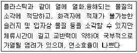
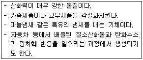

환경기능사 (2005-07-27 기출문제)
1과목: 대기오염방지
1. 폐수의 유속을 조절하여 모래, 자갈, 쇠붙이와 같은 비부패성 무기물을 주로 제거하는 장치는?
- 스크린
- 침사지
- 침전지
- 부상조
(정답률: 58%)

2. 함수율이 98%인 분뇨 300m3를 함수율 50%가 되도록 건조시킨다면 그 부피는?
- 7 m3
- 9 m3
- 12 m3
- 15 m3
(정답률: 61%)
3. 폐기물 중에서 철금속류만을 회수하려 할 때 가장 효과적인 선별 방법은?
- 풍력선별
- 스크리닝
- 자력선별
- 광학선별
(정답률: 86%)
4. 폐기물 시료를 축소하는 방법이 아닌 것은?
- 구획법
- 평판법
- 교호삽법
- 원추4분법
(정답률: 68%)
5. 어느 집진장치의 입구와 출구에서의 먼지 농도가 각각 200mg/Sm3, 25mg/Sm3이다. 이 집진장치의 집진효율은?
- 80.5%
- 85.5%
- 87.5%
- 90.5%
(정답률: 62%)
6. 환경오염 공정시험에서 생물학적 산소요구량(BOD)을 측정하기 위한 배양 조건은?
- 20℃에서 3일
- 20℃에서 5일
- 25℃에서 3일
- 25℃에서 5일
(정답률: 77%)
7. 런던형스모그에 관한 설명으로 틀린 것은?
- 발생시간은 아침 일찍이다.
- 침강역전 형태이다.
- 1차 오염형태이다.
- 시정거리는 100m이하이며 바람이 거의 없다.
(정답률: 66%)
8. 연소실에서 공기의 과잉율이 클 때 나타나는 현상은?
- 열손실이 커진다.
- 연소실의 온도가 올라간다.
- 오염물의 농도가 증가한다.
- 불완전 연소에 의해 CO의 농도가 커진다.
(정답률: 44%)
9. 폐기물 관리에 있어서 발생량을 원천적으로 줄이는 방법으로 가장 중점을 두어야 할 부분은?
- 소각
- 감량화
- 중간처리
- 최종처분
(정답률: 72%)
10. 유해 폐기물을 시험동물이 먹고, 50%가 죽을 수 있는 치사량일 때 이를 나타내는 단위는?
- RC50
- EP50
- LD50
- 50HR-TLM
(정답률: 55%)
11. 함진가스의 처리유속이 가장 작은 집진장치는?
- 접선유입식 원심력집진장치
- 침강실 중력집진장치
- 벤츄리형 세정 집진장치
- 사이클론형 세정 집진장치
(정답률: 57%)
12. 하수의 살균방법으로 사용되지 않는 것은?
- 염소처리
- 과황산처리
- 오존처리
- 이산화염소처리
(정답률: 52%)
13. 화학적 방법에 의한 인(P)의 제거법에 해당되는 것은?
- 이온교환법
- 암모니아 탈기법
- 불연속점염소처리법
- 알루미늄에 의한 응결
(정답률: 34%)
14. 슬러지 처리 계통도가 바르게 나열된 것은?
- 농축→안정화→개량→탈수→건조→소각→매립
- 농축→안정화→건조→소각→매립→개량→탈수
- 농축→탈수→건조→소각→매립→안정화→개량
- 농축→탈수→건조→소각→안정화→개량→매립
(정답률: 66%)
15. 여과집진 장치의 탈진 방식으로 옳지 않은 것은?
- 진동형
- 역기류형
- 충진형
- 충격기류형
(정답률: 35%)
2과목: 폐수처리
16. 소음의 특징에 대한 설명이 틀린 것은?
- 감각공해이다.
- 비축적성이다.
- 국소, 다발적이다.
- 대책후에 처리할 물질이 반드시 발생된다.
(정답률: 63%)
17. 기체연료의 분자식이 CH4인 가스 1m3를 연소하는데 필요한 이론공기량은?
- 1.83m3
- 2.94m3
- 4.76m3
- 9.52m3
(정답률: 25%)
18. 정상적으로 운영되는 혐기성 소화조에서 주로 발생하는 가스는?
- CH4, CO2
- CO2, SO2
- H2, CO
- CO, NH3
(정답률: 61%)
19. 수질오염 평가 항목으로 대장균군을 검사하는 가장 큰 이유는?
- 독성이 강하여 인체에 유해하다.
- 음식을 부패시켜 설사와 복통을 유발한다.
- 수인성 병원균의 오염 가능성을 알 수 있다.
- 대표적인 유해성을 갖고 있으며 번식력이 크다.
(정답률: 70%)
20. 폐수의 화학적 처리에 사용되는 응집제가 아닌 것은?
- PAC
- 황산제1철
- 수산화나트륨
- 황산알루미늄
(정답률: 35%)
21. 폐수의 화학적 처리에 있어서, 응집제를 이용하여 처리할 때 응집에 영향을 미치는 요인으로 관계가 적은 것은 ？
- 폐수의 용존산소량
- 폐수의 농도
- 응집제의 첨가량
- 폐수의 pH
(정답률: 52%)
22. 쓰레기 발생량에 영향을 미치는 요인에 대한 설명으로 틀린 것은?
- 기후에 따라 발생량과 종류가 다르다.
- 수거 빈도가 잦으면 발생량이 감소한다.
- 쓰레기통의 크기가 크면 발생량이 증가한다.
- 주민 구성원의 연령, 교육정도, 경제능력등은 발생량에 영향이 있다.
(정답률: 56%)
23. 압축기에 쓰레기를 넣고 압축시킨 결과 체적감소율이 80%이었다면 압축비는?
- 1.25
- 2.5
- 5.0
- 8.0
(정답률: 38%)
24. 대류권에서는 고도가 높아질수록 기온이 감소하는 특징이 있는데 여러 환경적 요인에 의해 고도가 높아질수록 기온이 상승하는 것을 무엇이라 하는가?
- 복사현상
- 열섬현상
- 역전현상
- 온난화현상
(정답률: 56%)
25. 인구가 10,000명인 아파트 단지 내에 쓰레기 저장용기를 설치하려고 한다. 1인당 하루에 배출하는 쓰레기의 양이 1.2kg이고 이틀에 한번 수거해간다면 4.5ton 용량의 콘테이너가 몇 개 필요한가?
- 4개
- 6개
- 8개
- 10개
(정답률: 41%)
26. 전기집진 장치에서 집진극이 갖추어야 할 조건으로 옳지 않은 것은?
- 압력손실이 가능한한 클 것
- 부착된 입자를 털기 쉬울 것
- 열,부식성 가스에 강하고 기계적 강도가 있을 것
- 전기장 강도가 균일하게 분포하도록 안정되어 있을것
(정답률: 67%)
27. 음의 세기가 10-6W/m2일 때, 음의 세기 레벨은?
- 20dB
- 40dB
- 60dB
- 70dB
(정답률: 58%)
28. 소음대책으로 사용되는 소음기의 종류가 아닌 것은?
- 팽창형 소음기
- 공명형 소음기
- 방음형 소음기
- 간섭형 소음기
(정답률: 32%)
29. 20℃, 740mmHg 상태에 있는 아황산가스(SO2,) 100L는 표준상태(STP)로 환산하면 몇 L인가?
- 80.22
- 90.72
- 100.72
- 110.22
(정답률: 35%)
30. 다음 집진장치중 일반적으로 집진효율이 가장 좋은 것은?
- 전기집진장치
- 사이클론집진장치
- 중력집진장치
- 원심력집진장치
(정답률: 46%)
31. 광해의 요인 혹은 종류와 가장 거리가 먼 것은?
- 갱내수
- 폐석집적장
- 지표침강
- 갱내안전등
(정답률: 47%)
32. 사이클론이나 멀티클론을 운전하는 도중 압력손실이 감소하고 집진율이 떨어지는 이유가 아닌 것은?
- 마모 또는 부식에 의하여 구멍이 생김
- 공기가 새어 들어감
- 팬의 마모
- 먼지의 부착이나 재로 인한 폐쇄
(정답률: 42%)
33. 다음 중 폐수의 화학적 처리에 해당되지 않는 것은?
- 산화 제거
- 오존 살균
- 화학 침전
- 부상 분리
(정답률: 63%)
34. 광화학 스모그(smog)에 대한 설명으로 옳은 것은?
- 가시거리가 길어진다.
- 강한 햇빛(자외선)을 받아 발생한다.
- 도시보다는 시골지역에서 주로 일어난다.
- 화석연료의 연소에 의해 생성된 SOx가 주된 원인이다.
(정답률: 50%)
35. 일반 침전지에서 부유물질의 침전속도가 감소되는 경우로 알맞는 것은?
- 폐수의 점도가 큰 경우
- 부유물질의 입자 크기가 큰 경우
- 부유물질의 입자 밀도가 큰 경우
- 폐수의 밀도와 부유물질의 밀도차가 큰 경우
(정답률: 42%)
3과목: 폐기물처리
36. 호기성 미생물에 의해 유기물질이 분해될 때 최종 생성되는 물질로만 짝지어 놓은 것은?
- H2S, CO2
- CO2, H2O
- CH4, H2S
- NH3, CO
(정답률: 55%)
37. 활성탄을 이용하여 제거할 대상 물질에 속하기 가장 어려운 것은?
- 탁도
- 기름성분
- 색도
- 냄새
(정답률: 36%)
38. 다음은 살수여상법에 의한 폐수 처리에 관한 설명이다. 옳지 않은 것은?
- 유지관리비가 비교적 적은 장점이 있다.
- 최종 침전지에서 슬러지 팽화 현상이 일어난다.
- 여과재 표면에 발육하는 생물 활동에 의한 처리방법이다.
- 여재 표면의 미생물막 탈리로 여상에 물이 고이는 현상이 일어날 수 있다.
(정답률: 58%)
39. 건조한 대기 성분을 농도(V/V) 순으로 바르게 표시한 것은?
- N2>O2>Ne>CO2>Ar
- N2>O2>Ar>CO2>Ne
- N2>O2>Ar>Ne>CO2
- N2>O2>Ne>Ar>CO2
(정답률: 58%)
40. 연료가 완전 연소되기 위한 조건으로 옳지 않은 것은?
- 체류시간이 짧아야 한다.
- 연소온도를 높게 유지한다.
- 공기의 공급이 충분하여야 한다.
- 공기와 연료의 혼합이 잘되어야 한다.
(정답률: 76%)
41. 폐기물을 파쇄하는 이유로 옳지 않은 것은?
- 폐기물의 균질화로 탈수가 용이하게 된다.
- 겉보기 밀도를 증가시켜 저장 공간을 줄인다.
- 퇴비화의 경우 분해효과를 높일 수 있다.
- 고체의 비표면적을 증가시켜 연소효과를 촉진시킨다.
(정답률: 19%)
42. 집진장치를 선정할 때 고려해야할 사항과 가장 거리가 먼것은?
- 분진의 특성
- 가스의 온도
- 집진효율
- 외기온도
(정답률: 62%)
43. 미생물을 이용한 폐수처리에서 미생물과 유입유기물양과의 관계를 나타낸 것은?
- SRT
- MLSS
- F/M비
- 용적부하
(정답률: 48%)
44. 배기가스 중 SO2농도가 500ppm이고, 배기 가스량이 2,000Sm3/hr일 때, 1일 배출되는 SO2양은?
- 24.34kg/일
- 68.57kg/일
- 431.72kg/일
- 1536.45kg/일
(정답률: 34%)
45. 굴뚝의 유효고란 무엇을 의미하는가?
- 굴뚝에서 대기 안정층까지 높이
- 지상에서 굴뚝끝까지 높이
- 굴뚝높이와 연기의 수직상승 높이
- 지상에서 대기 안정층까지 높이
(정답률: 57%)
46. 음압이 1Pa일 때, 음압레벨은 몇 dB인가?
- 82
- 86
- 90
- 94
(정답률: 38%)
47. 종파와 횡파에 대한 다음 설명 중 틀린 것은?
- 종파를 소밀파라고도 부른다.
- 지진파와 음파는 횡파에 속한다.
- 횡파는 매질이 없어도 전파된다.
- 종파는 파동의 진행방향과 매질의 진동방향이 서로 평행하다.
(정답률: 40%)
48. 퇴비화의 숙성정도를 나타내는 지표는?
- COD
- DO
- C/N 비
- BOD
(정답률: 65%)
49. 온실효과(green house effect)를 유발하는 가장 주된 기체는?
- 이산화탄소
- 프레온가스
- 이산화질소
- 일산화탄소
(정답률: 49%)
50. 다음과 같은 특징을 가진 소각로는?

- 고정상 소각로
- 회전로식 소각로
- 다단로식 소각로
- 유동상식 소각로
(정답률: 68%)
51. 다음 중 입자상 물질과 가스상 물질을 동시에 처리 할 수 있는 집진장치의 형태는?
- 원심력식 집진장치
- 여과식 집진장치
- 세정식 집진장치
- 전기식 집진장치
(정답률: 49%)
52. RDF가 의미하는 것과 가장 가까운 문항은?
- 증기터빈
- 건축자재
- 열교환기
- 개질고체연료
(정답률: 51%)
53. 폐기물 발열량의 분석에서 저위발열량과 고위발열량의 차이점은?
- 수분의 전도열
- 수분의 응축열
- 폐기물의 전도열
- 폐기물의 응축열
(정답률: 36%)
54. 폐기물의 발생량을 측정하는 방법이 아닌 것은?
- 간접 측정법
- 직접 계근법
- 차량 계수법
- 물질 수지법
(정답률: 66%)
55. 보기와 같은 특성을 지닌 대기오염 물질은?

- 오존
- 암모니아
- 염화수소
- 황산화물
(정답률: 61%)
4과목: 소음 진동학
56. 다음 중 폐기물 수거노선을 정하는데 있어서 고려할 사항이 아닌 것은?
- 교통체증이 되기 쉬운 도로는 피한다.
- 경제성을 고려한 수거노선을 결정한다.
- 가능한한 같은 길을 통과한다.
- 경사도로는 내려 가면서 수거한다.
(정답률: 59%)
57. 산성비에 대한 설명 중 옳지 않은 것은?
- pH가 7이하인 빗물을 산성비라 한다.
- 산성비는 건축물 및 구조물을 변색시키고 부식을 촉진시킨다.
- 산성비는 해풍에 의해 바닷물이 비산되거나 화산폭발 때문에 내리기도 한다.
- 산성비는 석탄, 석유등의 연소시 발생하는 황산화물이나 질소산화물 등이 빗물에 용해되어 내린다.
(정답률: 52%)
58. 환경대기 중의 비산먼지 측정기로 가장 알맞는 것은?
- 스택샘플러(Stack Sampler)
- 핸디샘플러(Handy Sampler)
- 분광광도계(Spectrophotometer)
- 하이볼륨에어샘플러(High Volume Air Sampler)
(정답률: 53%)
59. 직경 300mm인 관에서 유량이 0.3m3/sec으로 비압축성유체가 흐를 때 유속은?
- 1.29m/sec
- 2.79m/sec
- 4.24m/sec
- 7.45m/sec
(정답률: 29%)
60. 광산 폐수처리장의 침전지 설계시 침전지의 효율을 높이기 위한 사항 중 옳지 않은 것은 ？
- 침전지 내의 유속을 크게 한다.
- 침전지의 표면적을 크게 한다.
- 입자의 지름 및 응결성을 크게 한다.
- 체류시간을 길게 한다.
(정답률: 50%)